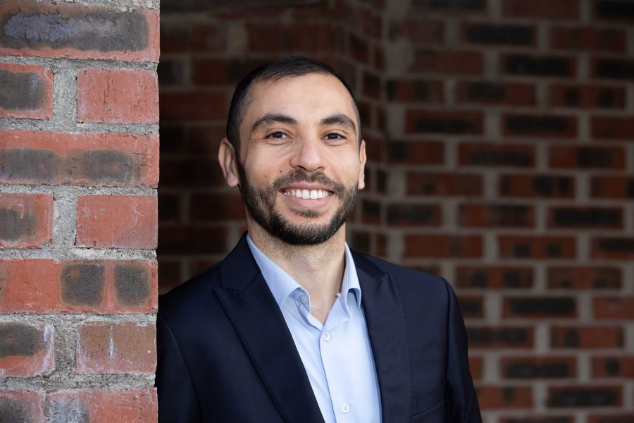
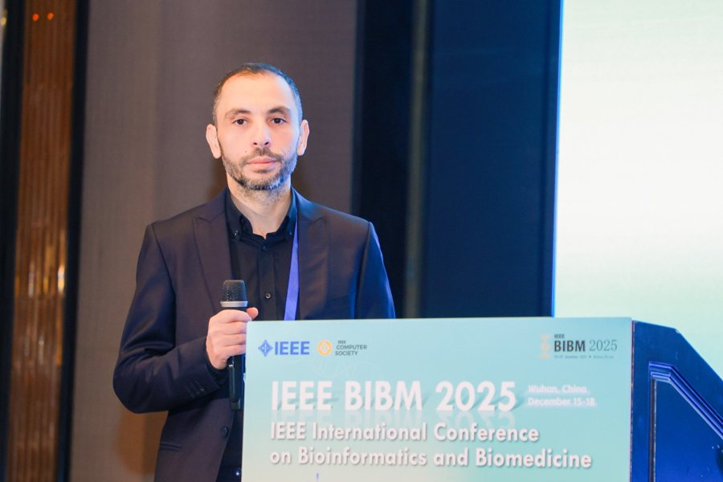

Esta página é uma tradução do original em inglês, preparada com o apoio de IA e verificada com ferramentas automáticas de gramática, ortografia e terminologia. Ainda não foi revista por um falante nativo; a versão inglesa é a versão de referência. Ler esta página em inglês
Sobre

O Dr. Haithem Afli é docente de Inteligência Artificial na Munster Technological University e investigador em IA multilingue, culturalmente consciente e centrada no ser humano. É codiretor institucional do Rinn Artificial Intelligence na MTU, coordenador adjunto da linha «Modelos de Linguagem Inclusivos e Métodos de Tradução» e investigador principal no centro.
É também investigador principal e responsável pela MTU no centro ADAPT da Research Ireland e fundador do grupo de investigação Human-Centred AI. A sua investigação incide sobre modelos de linguagem inclusivos, tradução automática, PLN multilingue e do árabe, raciocínio enraizado na cultura, avaliação fiável de grandes modelos de linguagem, IA de confiança, IA nos cuidados de saúde e biologia computacional.
O seu trabalho liga a investigação fundamental em IA ao ensino, ao envolvimento público, à colaboração interdisciplinar e às aplicações práticas nas áreas da língua, da saúde, da ciência e da indústria. As funções de governação e de serviço são descritas na página Liderança e serviço.

Funções e afiliações atuais
Munster Technological University
Docente de Inteligência Artificial e investigador principal
Ensino e investigação em IA, PLN e aprendizagem automática.
Rinn Artificial Intelligence
Codiretor institucional na MTU; coordenador adjunto da linha «Modelos de Linguagem Inclusivos e Métodos de Tradução»; investigador principal
Uma nomeação institucional única e integrada no centro nacional da Research Ireland.
Centro ADAPT
Investigador principal e responsável pela MTU
Centro da Research Ireland dedicado às tecnologias de conteúdos digitais baseadas em IA.
Grupo de investigação Human-Centred AI
Fundador e coordenador
Grupo de investigação da MTU dedicado à IA multilingue, culturalmente consciente e de confiança.
Computer Science Postgraduate Research Board, MTU
Presidente
Governação da investigação pós-graduada.
Agência de Execução para a Investigação da Comissão Europeia
Perito externo
Avaliador de ações de investigação e inovação do Horizonte Europa.
Associações profissionais: ACM · ACL.
Áreas de investigação
Modelos de linguagem inclusivos e multilingues · tradução automática e métodos de tradução · ciência da avaliação e fiabilidade dos LLM como avaliadores (LLM-as-a-judge) · IA centrada no ser humano e de confiança · IA para a saúde, a biologia e a descoberta científica. Ver Investigação e Rinn AI.
Formação
- Doutoramento em Informática (PLN), Le Mans Université, França, 2014 — Statistical Machine Translation in a Multimodal Context.
- Mestrado em Linguística Computacional, Université Grenoble Alpes, França, 2010 — Arabic Speech Translation.
- Licenciatura (BSc Hons) em Informática, Université de Monastir, Tunísia, 2009.